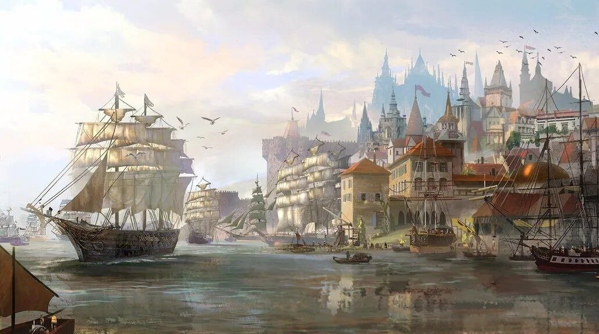
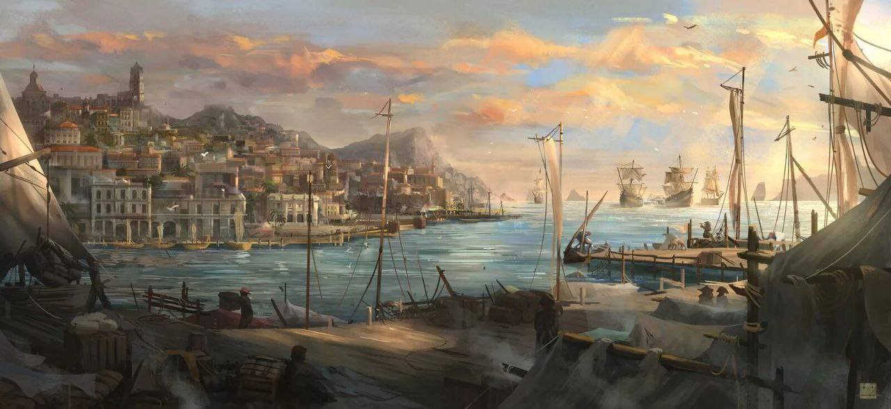
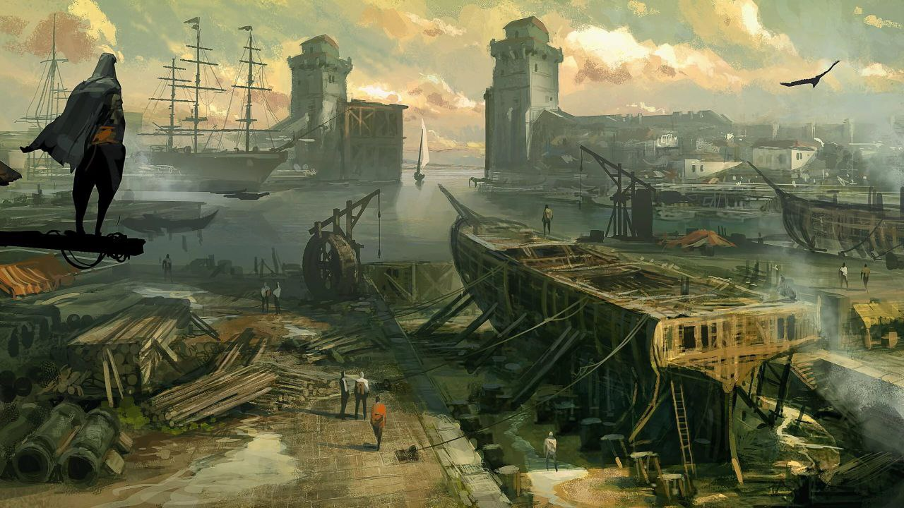

Портовый район находится у Окраин столицы, отсюда можно довольно быстро добраться до главных ворот Идрия. Порт представляет собой самостоятельный крупный район у берега Центы. Именно в этот порт прибывают торговые корабли со всех бизлежайших земель.
Идрий. Портовый район

Добро пожаловать в портовый район столицы Идрий!
В ваш нос ударил запах сырости, рыбы и чего-то тухлого, а уши пронзили крики птиц-воровок. Гомон людей и грохот телег кажется её стихал здесь даже ночью.
Устройство

Преступность

Криминальная деятельность в этом районе выше чем в остальных трущобах, не смотря на усиленную, но все же от части корумпированную охрану.
Инфраструктура

Здесь же находится наибольшее количество таверн, отелей и борделей для приезжих. Эти места славятся кораблестроительной мастерской, смрадом и соседством с крупнейшим рынком в Окраинах. Недалеко от порта так же проходит главная дорога в столицу.
Как говорил один знаменитый вор...
"В этих местах делаются деньги, а где крутятся деньги, там будут и воры и бедняки"